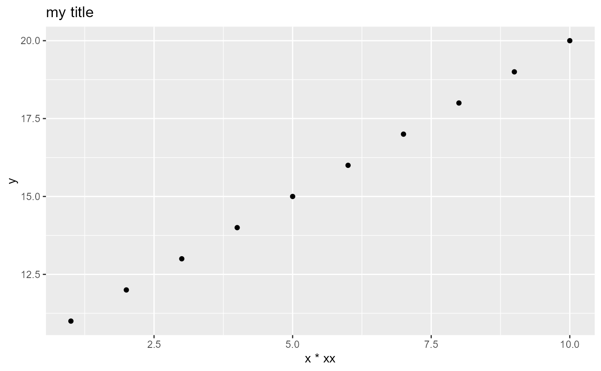
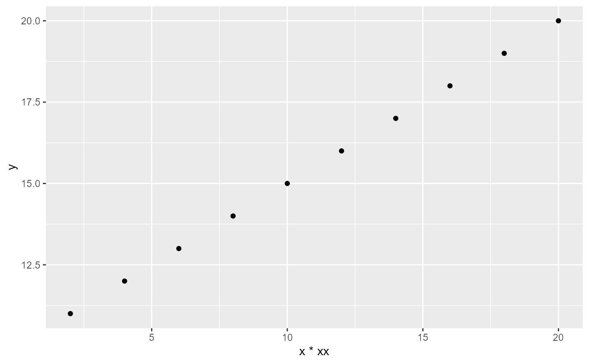

R/qcMetric.R
qcMetric-class.RdInternally calls the workerFcn() , which computes the actual plots metric scores and supporting data (e.g. mzQC metrics) of the derived class; the resulting data is checked and stored in the members of this class
Reference class which is instanciated with a metric description and a worker function (at initialization time, i.e. in the package) and can produce plots and mzQC values (at runtime, when data is provided) using setData().
All derived classes need to implement a 'workerFcn()' function, which returns a list with elements: c("plots", "mzQC", "htmlTable", "qcScores", "title"), where 'plots' is required; all others are optional.
helpTextDescription (lengthy) of the metric and plot elements
workerFcnFunction which generates a result (usually plots). Data is provided using setData().
plotsList of plots (after setData() was called)
htmlTableA table for display in the HTML report (preferred over a plot in Html mode)
qcScoresData.frame of scores from a qcMetric (computed within workerFcn())
mzQCAn named list of mzQC MzQCqualityMetric's (named by their fc.raw.file for runQuality or concatenated fc.raw.files for setQualities (e.g. "file 1;file4")) (valid after setData() was called)
qcCatQC category (LC, MS, or prep)
qcNameName of the qcScore in the heatmap
orderNrColumn index during heatmap generation and for the general order of plots
require(ggplot2)
#> Loading required package: ggplot2
#> Warning: package 'ggplot2' was built under R version 4.4.3
dd = data.frame(x=1:10, y=11:20)
a = qcMetric$new(helpText="small help text",
## arbitrary arguments, matched during setData()
workerFcn=function(.self, data, gtitle)
{
## usually some code here to produce ggplots
pl = lapply(1:2, function(xx) {
ggplot(data) +
geom_point(aes(x=x*xx,y=y)) +
ggtitle(gtitle)
})
## add mzQC metric for count of identified clusters
mzqc = lapply(1:3, function(id){
out = rmzqc::getQualityMetricTemplate("MS:1002406")
out$value = id;
return(out) })
names(mzqc) = paste0("file", 1:3);
return(list(plots = pl, mzQC = mzqc))
},
qcCat="LC",
qcName="MS/MS Peak shape",
orderNr = 30)
## test some output
a$setData(dd, "my title")
#> Starting to work on MS/MS Peak shape ...
#> Downloading obo from 'https://github.com/HUPO-PSI/psi-ms-CV/releases/download/v4.1.235/psi-ms.obo' ...
#>
#> Memory [MB] prior|after|max(diff) : 143.6 | 152.9 | 283.7 (140)
#>
#> Duration: 3 s
#>
#> ... MS/MS Peak shape done
#> NULL
a$plots ## the raw plots
#> [[1]]

#>
#> [[2]]
#>
a$getPlots(TRUE) ## same as above
#> [[1]]
#>
#> [[2]]
#>
a$getPlots(FALSE) ## plots without title
#> [[1]]
#>
#> [[2]]

#>
a$getTitles() ## get the titles of the all plots
#> [1] "my title" "my title"
a$helpText
#> [1] "small help text"
a$qcName
#> [1] "MS/MS Peak shape"
a$mzQC
#> $file1
#> <MzQCqualityMetric>
#> Public:
#> accession: MS:1002406
#> clone: function (deep = FALSE)
#> description: "The number of protein clusters that have been identifie ...
#> fromData: function (data, context = "MzQCqualityMetric")
#> initialize: function (accession = NA_character_, name = NA_character_, description = NA_character_,
#> isValid: function (context = "MzQCqualityMetric")
#> name: count of identified clusters
#> self: MzQCqualityMetric, R6
#> toJSON: function (...)
#> unit: list
#> value: 1
#>
#> $file2
#> <MzQCqualityMetric>
#> Public:
#> accession: MS:1002406
#> clone: function (deep = FALSE)
#> description: "The number of protein clusters that have been identifie ...
#> fromData: function (data, context = "MzQCqualityMetric")
#> initialize: function (accession = NA_character_, name = NA_character_, description = NA_character_,
#> isValid: function (context = "MzQCqualityMetric")
#> name: count of identified clusters
#> self: MzQCqualityMetric, R6
#> toJSON: function (...)
#> unit: list
#> value: 2
#>
#> $file3
#> <MzQCqualityMetric>
#> Public:
#> accession: MS:1002406
#> clone: function (deep = FALSE)
#> description: "The number of protein clusters that have been identifie ...
#> fromData: function (data, context = "MzQCqualityMetric")
#> initialize: function (accession = NA_character_, name = NA_character_, description = NA_character_,
#> isValid: function (context = "MzQCqualityMetric")
#> name: count of identified clusters
#> self: MzQCqualityMetric, R6
#> toJSON: function (...)
#> unit: list
#> value: 3
#>